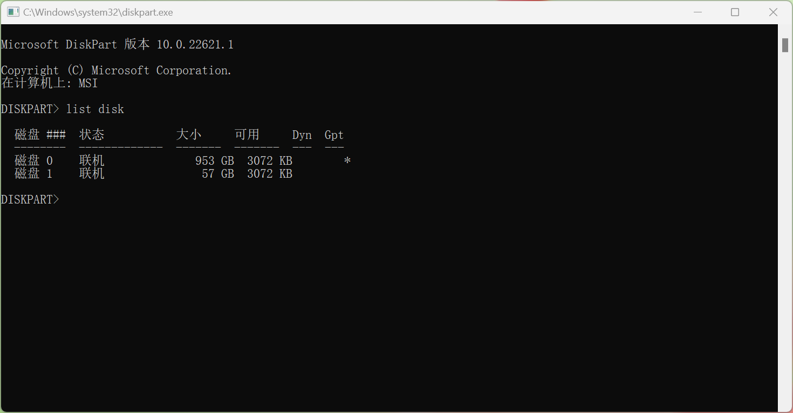
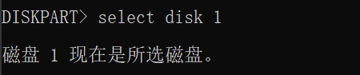
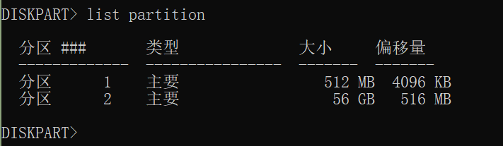
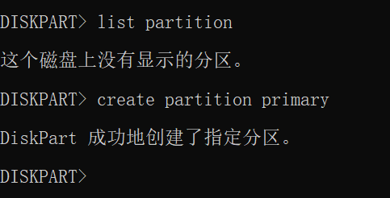

EmuELEC杂谈
夜阑卧听风吹雨，铁马冰河入梦来。
CPU架构体系
- 复杂指令集CISC（Complex Instruction Set Computing）：X86
- 精简指令集RISC（Reduced Instruction Set Computer ）：ARM（ARM11以后的产品改用Cortex命名）
- 精简指令集RISC-V（发音为“risk-five”）: 开源架构，未来的方向
总结：EmuELEC系统是针对AMLogic芯片开发的，AMLogic芯片是基于ARM架构的，支持aarch64指令集 。
安装EmuELEC
准备条件
- U盘一个
- 烧录软件:Win32DiskImager或者Rufus（貌似这个更优秀）
- 镜像文件bilibili:人中日月镜像包 EmuELEC中文网
前置条件
- 晶晨系列CPU的盒子
延申话题：看了大多数盒子的配置参数，最终发现当贝的盒子产品不错，价格较贵。并且看到了一款当贝的3200ASNI的投影仪很给力，与任天堂的Nintendo Switch打包卖，当贝OS比什么大米好多了，后悔买了大米投影仪。
方案1
直接使用烧录软件将系统烧录进入U盘，系统开机后会自动扩容，但是我的N1扩容出了问题，稍后详述！
方案2
使用DiskGenius手动分区，并进行硬盘分区对克,详见：https://www.znds.com/tv-1172068-1-1.html
扩容失败
【人中日月】的镜像第一次启动后会自动扩容，但是/storage文件系统容量未增加。
使用df（disk free）命令查看文件系统：
CoreELEC:~ # df -hT
/dev/sda1 vfat 511.7M 508.4M 3.4M 99% /flash
/dev/sda2 ext4 28.4G 27.9G 486.6M 98% /storage
/dev/loop0 squashfs 492.3M 492.3M 0 100% /
tmpfs tmpfs 903.2M 0 903.2M 0% /dev/shm
tmpfs tmpfs 903.2M 8.6M 894.6M 1% /run
tmpfs tmpfs 903.2M 0 903.2M 0% /sys/fs/cgroup
tmpfs tmpfs 903.2M 2.6M 900.6M 0% /var
tmpfs tmpfs 903.2M 0 903.2M 0% /tmp
none overlay 28.4G 27.9G 486.6M 98% /tmp/assets
none overlay 28.4G 27.9G 486.6M 98% /tmp/cores
none overlay 28.4G 27.9G 486.6M 98% /tmp/overlays
none overlay 28.4G 27.9G 486.6M 98% /tmp/joypads
none overlay 28.4G 27.9G 486.6M 98% /tmp/shaders
none overlay 28.4G 27.9G 486.6M 98% /tmp/database
如上所示：/dev/sda2 容量是27.9G
但是使用parted命令显示出来的分区容量是扩容后的
CoreELEC:~ # parted /dev/sda2 print
Model: Unknown (unknown)
Disk /dev/sda2: 62.4GB
Sector size (logical/physical): 512B/512B
Partition Table: loop
Disk Flags:
Number Start End Size File system Flags
1 0.00B 62.4GB 62.4GB ext4
如上磁盘分区总共有62.4G,还有30多G不见了
说明，分区容量是扩展了，但是文件系统并未扩展，使用resize2fs调整文件系统大小
CoreELEC:~ # resize2fs /dev/sda2
resize2fs 1.45.2 (27-May-2019)
Filesystem at /dev/sda2 is mounted on /storage; on-line resizing required
old_desc_blocks = 118, new_desc_blocks = 233 #这里提示有233个blocks
resize2fs: Permission denied to resize filesystem
https://linux.vbird.org/linux_basic/centos7/0420quota.php#lvm_hint
resize2fs: Permission denied to resize filesystem
使用resize2fs提示没有权限，解决方案如下：
- 卸载文件系统。
umount /storage
- 执行文件系统检查。
e2fsck -y /dev/sda2
- 调整文件系统大小
resize2fs /dev/sda2
- 重新挂载
mount /dev/sda2 /storage
- 检查文件系统是否扩容成功
df -hT
umount: can’t umount /storage : Device or resource busy
使用fuser查看哪些进程使用了该文件系统，并kill掉进程
fuser -m /storage
umount -l /storage #强行解除挂载
恢复分区
-
在cmd中输入
diskpart命令 -
list disk显示磁盘信息  -
选中要格式化的那张U盘
select disk 1

-
使用
list partition校准下是否选择的是正确的磁盘，不要把电脑本身的磁盘给清除了  -
输入
clean清除磁盘 -
创建主要分区
create partition primary

- 格式化磁盘
format fs fat32